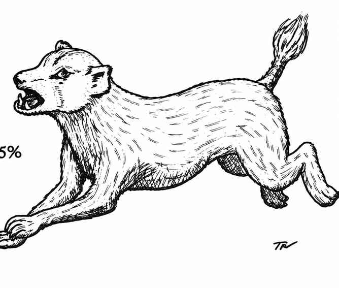

闪现犬 · Blink Dog
 |
|
闪现犬呈棕黄色，智力与普通人类相当，拥有相当复杂的语言，以吠叫、短促叫声、呜咽和低吼组成。它们会使用一种有限的传送能力“闪现”。战斗时，犬群成员会以随机间隔忽隐忽现；每只闪现的犬有 75% 的概率出现在对手身后。
单只闪现犬掷 12 面骰结果为 7 或更高时即可闪现。再掷一次决定出现的位置：1 为对手正前方；2 为有盾一侧（或左侧）前方；3 为无盾一侧（或右侧）前方；4–12 为对手身后。闪现犬出现时距对手 1–3 尺，可以立即攻击。闪现是与生俱来的本能，它不会出现在已有实体占据的位置。
若犬群遭受严重威胁，或损失达到 25% 及以上，全体便会闪现离去且不再返回。闪现犬与移位兽之间有极深的仇怨；两者相遇必定互相攻击。若在巢穴中遇到闪现犬，有 50% 的概率另有 3–12 只幼犬；幼犬有 1–2 个生命骰，攻击造成 1–2／1–3 点伤害。幼犬可以驯服和训练，市场价值为 1,000–2,000 金币。